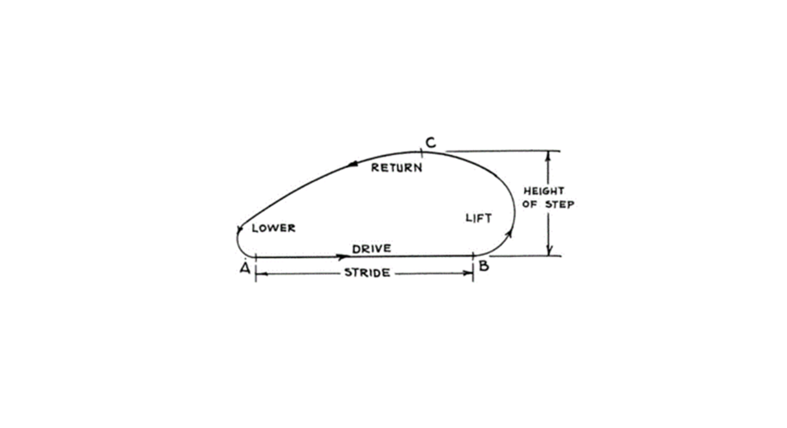
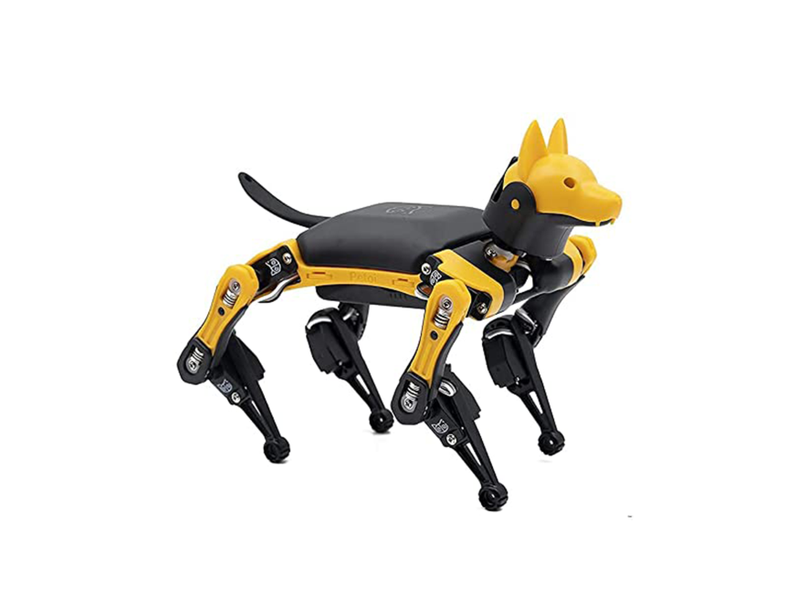
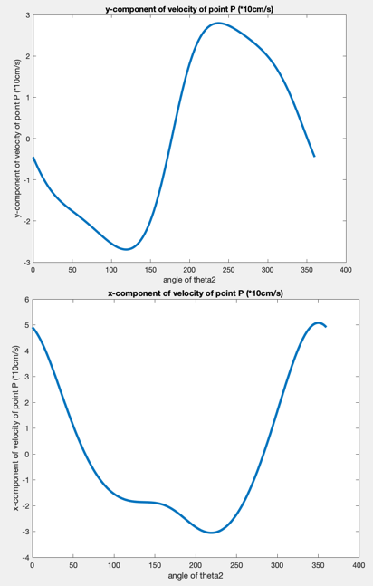

Mechanism Linkage Design Project named
4-Legs Walking Robot
Design of Mechanism
School of Engineering @ Rutgers University - New Brunswick
Advisor
Prof. Xi Gu
Group Memebers
Zhijing Hu, Pik Luen Li, Feihao Ding, Dawei Hu
About our project
The prototype of our design is 4-legs mammals, that is why we are using the four-bar linkage.
The cover of on the previous page is just a rough demo of the CAD model.
The reasons why this kind of mechanism is needed in our design, are to reduce or eliminate the limitations of robots with wheels only, and to perform more complex works where the robots are needed instead of humans themselves.
As for our main design objective, according to the previous part, is to design a flexible walking robot that resembleed with 4 legs linkage, performing different walking ways similar as the dogs, the elephants or mice, depending on disparate situations, with a simple four-bar linkages system. The footpath that is similar to mammals is shown below. The stride part is needed to be as flat as possible to keep balance.

The spatial constraints for our project will be 40 centimeters for the height of the step, and 50 centimeters long for the stride in our demo calculations and demostration.
In Total, in one single foot system, there are 4 links and 4 full joints. By calculation, the Degree of freedom equals 1.
In order to have more information about the point that is in touch with the ground, we have done some analysis of our design.
The first one is the position analysis. The whole design is driven by a motor connected to link AC, so it is a crank. If we assume the length of AB is equal to a hundred centimeters, AC is 20cm, CD is 80cm, BD is 48cm, CE is 160cm, alpha is 20 degree, and we also know the angular velocity of AC is 1.57 rad/s. We could find out the position of point E when the link AC is rotating from 0 degree to 360 degree.
The calculations could be found on my GitHub page.

We have also done the velocity analysis on point E. Information obtained in the position analysis could be used here to calculate the velocity. The calculation process is shown plotted through Matlab. The upper graph shows the y component of velocity of point E versus angle of theta 2 and the lower graph shows the x component. The horizontal speed of the point touching the ground should be as uniform as possible so that they don't skid or shake the machine. Also, the velocity should be larger when point E is not touching the ground.
With the velocity analysis, further modifications could be done to make improvements for our design.

To know more about the details, please check my GitHub page of this project: 4-Legs Walking Robot.